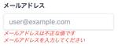

もふもふ技術部
https://tech.mof-mof.co.jp
IT技術系mofmofメディア
フィード
Expoでブランクアプリケーションを生成してEASビルドを試す
もふもふ技術部
個人開発しているアプリのExpoバージョンを上げていったらビルドが通らなくなった。そこで、比較的新しいバージョンのExpoではビルドがどういう感じになっているのかキャッチアップしたい。ひとまずブランクアプリケーションが起動するまでまずはブランクアプリケーションを生成する。$ expo init ExpoBlank┌───────────────────────────────────────────────────────────────────────────┐│ ││ The global expo-cli package has been deprecated. ││ ││ The new Expo CLI is now bundled in your project in the expo package. ││ Learn more: https://blog.expo.dev/the-new-expo-cli-f4250d8e3421. ││ ││ To use the local CLI instead (recommended in SDK 46 and higher), run: ││ › npx expo <command> ││ │└───────────────────────────────────────────────────────────────────────────┘Migrate to using:› npx create-expo-app --templateどうやらexpo-cliをglobalで使うのは非推奨になっているらしい上に、expo initではなくnpx create-expo-appを使えとのこと。大人しく言うことに従う。$ npm uninstall -g expo-cli$ npx create-expo-app ExpoBlanknpx: installed 1 in 0.742sUnexpected token '??='なんか謎のエラー。かなり古い環境でやっていたので、たぶんnodeのバージョンのせいだろう。nodeのバージョンを上げる（nodeのバージョン管理はfnmを使ってます）。$ fnm currentv14.21.3$ fnm use v21.7.2 ✘ 2Using Node v21.7
14分前

【Rails】validationのエラーメッセージをカラムごとに抜き出す
もふもふ技術部
バリデーションでエラーになった際に、エラーメッセージを各テキストフィールド等の下部に表示したい時があると思います。今回はそんな時に便利な各attributeごとにエラーメッセージを抜き出す方法を紹介します。手順例えば User の email のエラーは以下のように抜き出します。user = User.newuser.validuser.errors.where(:email)抜き出したものは配列になっているので、以下のようにすれば全てのエラーメッセージを日本語化した状態で取得できます。user.errors.where(:email).map(&:full_message)これを応用すると、エラーメッセージを各テキストフィールドの下部に表示できます。<%= form_with model: @user, local: true do |f| %> <div> <label>メールアドレス</label> <%= f.text_field :email %> <% @user.errors.where(:email).each do |error| %> <p><%= error.full_message %></p> <% end %> </div> <div> <label>メールアドレス（確認）</label> <%= f.text_field :email_confirmation %> <% @user.errors.where(:email_confirmation).each do |error| %> <p><%= error.full_message %></p> <% end %> </div> <div> <%= f.submit "登録する" %> </div><% end %>終わり今回は、erbで表示することを前提にしましたが、APIでattributeごとにエラーメッセージを返す時なんかにも便利そうだなと思いました。
7時間前
PostgreSQLでクエリの実行計画を見る 1
1
もふもふ技術部
こんにちは。豊泉です。データベースはPostgreSQLを使うことが多いのですが、最近実行計画をあまり見ていないなと思ったので、PostgreSQLでいくつかクエリを試しながら実行計画を見てみようと思います。検証環境検証データクエリを試してみるAccountテーブルに10, 100, 1000, 10000, 100000件のデータを用意し全件取得してみるWHERE条件を追加してインデックスありorなしで試してみるJOIN, ORDER BY, COUNT, LIMIT/OFFSETを試してみるJOINORDER BYCOUNTLIMIT/OFFSETクエリの実行速度を見てみる実行計画はJSONやYAML、XMLでも表示できるみたい使用したソースはこちら最後に検証環境DockerでPostgreSQLを立ち上げます。クエリの実行やデータの確認にはpgAdminを使用します。// compose.ymlservices: postgres: image: postgres:16.3 ports: - ${DB_PORT}:${DB_PORT} volumes: - db-store:/var/lib/postgresql/data environment: POSTGRES_USER: ${DB_USER} POSTGRES_PASSWORD: ${DB_PASSWORD} POSTGRES_PORT: ${DB_PORT} POSTGRES_DB: ${DB_NAME} TZ: Asia/Tokyo restart: always pgadmin: image: dpage/pgadmin4:8.8 ports: - 8888:80 volumes: - pgadmin-data:/var/lib/pgadmin environment: PGADMIN_DEFAULT_EMAIL: root@example.com PGADMIN_DEFAULT_PASSWORD: ${DB_PASSWORD} TZ: Asia/Tokyo depends_on: - postgres restart: alwaysvolumes: db-store: pgadmin-data:検証データ検証データの準備にはprismaとfakerを使用しました。// package.json{
11日前

既存プロジェクトでPrettier・ESLintをBiomeに移行してみた
もふもふ技術部
Biome v1.7からPrettierとESLintから移行するためのコマンドが追加されたので、既存のNext.jsプロジェクトで試しに移行コマンドを叩いてみました。biomejs.devBiomeのインストールと初期設定ESLintからの移行コマンドPrettierからの移行コマンドpackage.jsonのscript変更実行してみるBiomeのインストールと初期設定Biomeをインストール。> npm i --save-dev --save-exact @biomejs/biome@latestadded 3 packages, removed 81 packages, and audited 891 packages in 5s157 packages are looking for funding run `npm fund` for details3 vulnerabilities (2 moderate, 1 high)To address issues that do not require attention, run: npm audit fixTo address all issues (including breaking changes), run: npm audit fix --forceRun `npm audit` for details.設定ファイル生成コマンドを実行する。> npx @biomejs/biome init Welcome to Biome! Let's get you started...Files created - biome.json Your project configuration. See https://biomejs.dev/reference/configurationNext Steps 1. Setup an editor extension Get live errors as you type and format when you save. Learn more at https://biomejs.dev/guides/integrate-in-editor/ 2. Try a command biome check checks formatting, import sort
2ヶ月前
【Rails7】特定のviewsで部分的にReactを使う
もふもふ技術部
「ここのページだけReact使いたいんだよな〜」とか「ページのここの部分にReact入れ込みたいんだよな〜」ということはありませんか？こちらの記事を応用していきます。↓www.mof-mof.co.jp下準備 www.mof-mof.co.jp手順package.json に記載されているビルドスクリプトのビルド対象に app/javascript/*.* が入っていることを確認する。"build:js": "esbuild app/javascript/*.* --bundle --sourcemap --outdir=app/assets/builds"Reactで実装と、renderの設定をするapp/javascripts/mofmof.tsx import React from 'react'; import { createRoot } from 'react-dom/client'; export const Mofmof = () => { return ( <> <div>mofmof</div> </> ); }; const container = document.getElementById('mofmof'); if (container) { const root = createRoot(container); document.addEventListener('DOMContentLoaded', () => { root.render(<Mofmof />); }); }viewsファイルのReactを使いたい箇所に以下を追記する<%= javascript_include_tag "mofmof", "data-turbo-track": "reload", type: "module" %>色んなページでReactを使いたい場合は、renderの設定を別ファイルに分けて共通化するのがよいと思います。終わりこの方法だとReact側でsessionを管理しなくても、Rails側で使用しているsession（ログイン情報など）を利用できます。また、要件によっては工数を削減することにもつながると思うので、個人開発するときには重宝するかもしれません。（ちょこっと動的にしたい！というときなんかは、ReactではなくHotwireを使うの
2ヶ月前
FlutterでiOSアプリのビルドとデプロイを自動化した話
もふもふ技術部
こんにちは。豊泉です。少し前に良い個人開発のアイデアが浮かんだので開発していたのですが、アプリのビルドやアップロードなどは少しややこしく以前から面倒に感じていたので、せっかくならビルドとアップロードを自動化しようと思いGithub Actionsを使ってやってみました。必要なもの自動化する前に、アプリをビルド＆アップロードするにあたって下記が必要です。Apple IDAppleのサービスを利用する際に必要なIDですない場合は下記から作成しますhttps://appleid.apple.com/App-specific password下記から作成します（App-Specific Passwordsのところ）https://appleid.apple.com/account/manageBundle ID下記から作成しますhttps://developer.apple.com/account/resources/identifiers/listCertificate下記から作成しますhttps://developer.apple.com/account/resources/certificates/listCertificate passwordCertificateをp12ファイルにexportする際に要求されるので指定しますProfile下記から作成しますhttps://developer.apple.com/account/resources/profiles/listApp下記から作成しますhttps://appstoreconnect.apple.com/apps準備上記が準備できたらGithub Actionsのワークフローを書いていきます。環境変数にはビルドとアップロードに必要な下記項目を入れておきます。今回は下記を設定しました。APPLE_ID上記のApple IDですAPPLE_APP_PASS上記のApp-specific passwordですCERTIFICATES_P12上記のCertificateをexportした際のp12ファイルをbase64でエンコードしたものですCERTIFICATE_PASSWORD上記のCertificate passwordですPROVISIONING_PROFILE上記のProfileをbase64でエンコード
2ヶ月前
【Rails7】任意のviewsからJSファイルを個別に読み込む
もふもふ技術部
このviewsだけにこのJSを読み込みたい・・・！手順package.json に記載されているビルドスクリプトのビルド対象に app/javascript/*.* が入っていることを確認する。"build:js": "esbuild app/javascript/*.* --bundle --sourcemap --outdir=app/assets/builds"JSファイルを作るapp/javascripts/mofmof.jsconsole.log("mofmof")読み込みたいviewsファイルに以下を追記する<%= javascript_include_tag "mofmof", "data-turbo-track": "reload", type: "module" %>app/javascripts/ 直下にJSファイルを置く場合は意外とこれだけで終わります。JSファイルの階層を深くしたい場合app/javascripts/mofmof/index.js のように app/javascripts/ 直下にJSファイルを置かない場合は少し工夫が必要です。package.json に記載されているビルドスクリプトを修正する"build:js": "esbuild app/javascript/*.* app/javascript/**/*.* --bundle --sourcemap --outdir=app/assets/builds",読み込みたいviewsファイルに以下を追記する<%= javascript_include_tag "mofmof/index", "data-turbo-track": "reload", type: "module" %>ビルドされたファイルも階層が深くなっているので、注意しましょう。終わりpackage.json を修正するのを忘れて、「JSファイルが見つからないってエラーになるなぁ」ということもあると思います。Rails5や6に慣れてる人は気を付けましょう！
2ヶ月前
Rails7 に React + TypeScript を導入する
もふもふ技術部
Rails7のアプリでJSのビルドツールはesbuildを使用します。www.mof-mof.co.jpReactとTypeScriptをインストールする以下のコマンドで必要なパッケージをインストールyarn add typescript react react-dom react-router-dom @types/react @types/react-dom @types/react-router-dompackage.json のビルドスクリプトの末尾に --loader:.js=jsx を追記"build:js": "esbuild app/javascript/*.* --bundle --sourcemap --outdir=app/assets/builds --loader:.js=jsx"各種ファイルを作成するrails g controller front index でコントローラーを追加するconfig/routes を修正するget 'front/index' を削除以下を追加root to: 'front#index'get '*path', to: 'front#index'app/views/top/index.html.erb を修正する<div id="root"></div>app/javascript/application.js に以下を追記するimport React from 'react';import { createRoot } from 'react-dom/client';import { App } from './react/App';const container = document.getElementById('root');if (container) { const root = createRoot(container); document.addEventListener('DOMContentLoaded', () => { root.render(<App />); });}以下のファイルを作成するapp/javascript/react/App.tsximport React from 'react'import { BrowserRouter as Router } from 're
2ヶ月前
基本情報技術者試験の勉強してみた
もふもふ技術部
勉強し始めたきっかけもっと低レイヤーのことを勉強したい！と先輩エンジニアに相談した結果、「学びたい内容は基本情報勉強すれば大体網羅できるよ！」と言われたのがきっかけです。使用した書籍こちらの書籍で学習しました。令和06年 基本情報技術者 合格教本作者:角谷 一成,イエローテールコンピュータ技術評論社Amazon良かったこと経験年数1.5年くらいですが、今のタイミングだからこそ入って来る内容もあり、特にネットワーク、セキュリティ分野に関しては実務に活きる部分も多かったです。以下は印象に残った内容です。公開鍵暗号方式SSHやパスキー認証で用いられる暗号方式です。他にも幅広く活用されている暗号方式で、図解説明もわかりやすく面白かったです。ソートアルゴリズム文字で見ても分かりづらかったのですが、そんな人のために神記事を執筆されている方がいました。qiita.com微妙だったこと業務に結び付かない内容が多いことくらいかと思います。とはいえ、知ってて損は内容な知識も多々あったので、個人的にそこまでネガティブではありませんでした。結論勉強して良かったです！資格は所詮資格だからという思いで学習の優先順位を下げていたのですが、思っていた以上に得られるものが多かったです。受験自体はまだですが、どうせなら近々受験しようと思っています。
2ヶ月前
TanStack FormでNext.jsのServer Actionsを使ってみた
もふもふ技術部
はじめに準備create-next-apptanstack-form インストールフォーム実装zod のスキーマを定義FormFactory オブジェクトを作成Server Action を定義フォームコンポーネントを作成ページでフォームコンポーネントを使用する動作確認クライアントサイドのバリデーションサーバーサイドのバリデーションTanStack Form を使ってみた感想最後にはじめにNext.js v14 から Stable になった Server Actions。それに対応した フォームライブラリとして Tanstack Form を試してみます。TanStack Form は現時点で v0 の β 版ですが、以下の特徴を備えた フォームライブラリです。ファーストクラスの TypeScript サポートシンプルで簡潔な APIクライアントサイドとサーバーサイド両方のバリデーションに対応ヘッドレス任意の UI フレームと組み合わせて実装可能アグノスティックな設計React、Vue、Angular, Solid, Lit と複数のフレームワークに対応フレームワーク間で再利用可能非同期バリデーションとデバウンシングを組み込みでサポートhttps://tanstack.com/form/latest準備https://tanstack.com/form/latest/docs/framework/react/guides/ssrcreate-next-app % npx create-next-app@latestNeed to install the following packages:create-next-app@14.2.1Ok to proceed? (y) y✔ What is your project named? … nextjs_tanstack_form_example✔ Would you like to use TypeScript? … No / Yes✔ Would you like to use ESLint? … No / Yes✔ Would you like to use Tailwind CSS? … No / Yes✔ Would you like to use `src/` directory? … No / Yes✔ W
3ヶ月前
よく使う・知ってると便利な rails new コマンドのオプション
もふもふ技術部
Railsプロジェクトを新規作成する機会は多くないため意外とオプションって忘れがちだと思います。rails new コマンドのオプションなんだったっけかな〜という時のためによく使うオプション、知ってると便利なオプションをまとめてみました。DB編使用するDBを指定する場合は -d ほげほげ で指定できます。sqlite3 です。PostgreSQLの場合rails new mofmof -d postgresqlMySQLの場合rails new mofmof -d mysqlOracleの場合rails new mofmof -d oracleDBを使用しない場合rails new mofmof -OJSのビルドツール編Rails7からWebpackerが標準ではなくなりました。esbuildの場合rails new mofmof -j esbuildwebpackの場合rails new mofmof -j webpackCSSフレームワーク編rails new の段階でCSSフレームワークを指定できるようになりました。tailwindの場合rails new mofmof -c tailwindbootstrapの場合rails new mofmof -c bootstrapsassの場合rails new mofmof -c sass知ってると便利カレントディレクトリにRailsプロジェクトを作成するrails new .アプリ名を指定するディレクトリ名とアプリ名を変えたい時に便利です。Mofmofアプリを作るときの例がこちらrails new . -n mofmof他にもたくさん！スキップする系のコマンドなど他にも沢山あるのでrails new --help コマンドでお気に入りのオプションを探してみてください！
3ヶ月前
Rails7 に Tailwind CSS を導入する
もふもふ技術部
Rails7以前で Tailwind CSS を使用したい場合はWebpackerを使って yarn add tailwindcss して ほげほげファイルを追加して〜〜としていたと思います。プロジェクト作成時に導入する方法と、既存のプロジェクトに途中から導入する方法をまとめてみました。 プロジェクト作成時に導入する場合rails new mofmof -j esbuild --css tailwind でプロジェクトを作成する以下を package.json に追加する"scripts": { "build": "esbuild app/javascript/*.* --bundle --sourcemap --format=esm --outdir=app/assets/builds --public-path=/assets", "build:css": "tailwindcss -i ./app/assets/stylesheets/application.tailwind.css -o ./app/assets/builds/application.css --minify"} 既存のプロジェクトに途中から導入する場合以下を Gemfile に追加gem "cssbundling-rails"bundle install を実行bin/rails css:install:tailwind 実行以下を package.json の scripts に追加する"build:css": "tailwindcss -i ./app/assets/stylesheets/application.tailwind.css -o ./app/assets/builds/application.css --minify"自分で作成したCSSファイルを読み込みたい場合例えば app/assets/stylesheets/mofmof.css というCSSファイルを読み込みたい場合はapp/assets/stylesheets/application.tailwind.css を以下のように変更します。@import "tailwindcss/base";@import "tailwindcss/components";@import "tailwindcss/utiliti
3ヶ月前
Rails7 + MySQL を docker-compose で環境構築する
もふもふ技術部
以前、Rails7 + PostgreSQLの環境構築をしました。www.mof-mof.co.jpwww.mof-mof.co.jp今回は、MySQLを使ったRails7の環境構築をしてみます。本記事ではビルドにimportmapを使用した場合の環境構築を行なっていきます。esbuildを使用する場合は こちらの記事 を読み替えながら こちらのボイラープレートを参考にしてみてください。1. ファイルを準備するまず始めに、以下の2つのファイルを作成します。Dockerfile.devdocker-compose.ymldocker-entrypoint-initdb.d/grant_privileges_to_user.sql次に、各ファイルの中身を以下のようにしていきます。Dockerfile.devFROM ruby:3.3.0-alpineRUN apk add --no-cache git build-base libxml2-dev libxslt-dev mysql-dev mysql-client tzdata bash vim && \ cp /usr/share/zoneinfo/Asia/Tokyo /etc/localtimeENV APP_ROOT /appRUN mkdir $APP_ROOTWORKDIR $APP_ROOTENV LANG=ja_JP.UTF-8 \ BUNDLE_JOBS=4 \ BUNDLE_RETRY=3 \ EDITOR=vimRUN gem update --system && \ gem install --no-document bundler:2.5.7RUN bundle config set force_ruby_platform truedocker-compose.ymlversion: '3'services: app: build: context: . dockerfile: "Dockerfile.dev" stdin_open: true tty: true ports: - 3000:3000 command: /bin/sh -c "bundle install && rm -f tmp/pids/server.pid && bin/rails s -b 0.0.0.0 -p 300
3ヶ月前
Rails7 + PostgreSQL + esbuild を docker-compose で環境構築する
もふもふ技術部
Rails7がリリースされてから、環境構築で躓いた経験がある方は少なくないのではないでしょうか。Rails7 + PostgreSQL + importmap の環境構築については以下の記事をご参照ください。www.mof-mof.co.jp1. ファイルを準備するまず始めに、以下の2つのファイルを作成します。Dockerfile.devdocker-compose.ymlRails7.1から rails new で新規プロジェクトを作成したときに Dockerfile が自動生成されるようになりました。Dockerfile は名前が競合しないように Dockerfile.dev と別名にしています。次に、各ファイルの中身を以下のようにしていきます。Dockerfile.devポイント1Dockerfile.dev の中ではRailsをインストールしません。Railsプロジェクト内には Gemfile と Gemfile.lock があるはずなので、そちらを参照して正しいバージョンのRailsをインストールするべきです。ポイント2esbuild の環境にはnode と yarn が必要なので nodeのイメージをセットアップした後に、Rubyのイメージへ必要なファイルをコピーします。FROM node:20.12.0-alpine as nodeRUN apk add --no-cache bash curl && \ curl -o- -L https://yarnpkg.com/install.sh | bash -s -- --version 1.22.19FROM ruby:3.3.0-alpineCOPY --from=node /usr/local/bin/node /usr/local/bin/nodeCOPY --from=node /usr/local/bin/npm /usr/local/bin/npmCOPY --from=node /usr/local/bin/npx /usr/local/bin/npxCOPY --from=node /opt/yarn-* /opt/yarnRUN ln -fs /opt/yarn/bin/yarn /usr/local/bin/yarnRUN apk add --no-cache git build-b
3ヶ月前
Rails7 + PostgreSQL + importmap を docker-compose で環境構築する
もふもふ技術部
Rails7がリリースされてから、環境構築で躓いた経験がある方は少なくないのではないでしょうか。Rails7 + PostgreSQL + esbuild の環境構築については以下の記事をご参照ください。www.mof-mof.co.jp1. ファイルを準備するまず始めに、以下の2つのファイルを作成します。Dockerfile.devdocker-compose.ymlRails7.1から rails new で新規プロジェクトを作成したときに Dockerfile が自動生成されるようになりました。Dockerfile は名前が競合しないように Dockerfile.dev と別名にしています。次に、各ファイルの中身を以下のようにしていきます。Dockerfile.devポイントDockerfile.dev の中ではRailsをインストールしません。Railsプロジェクト内には Gemfile と Gemfile.lock があるはずなので、そちらを参照して正しいバージョンのRailsをインストールするべきです。FROM ruby:3.3.0-alpineRUN apk add --no-cache git build-base libxml2-dev libxslt-dev postgresql-dev postgresql-client tzdata bash vim && \ cp /usr/share/zoneinfo/Asia/Tokyo /etc/localtimeENV APP_ROOT /appRUN mkdir $APP_ROOTWORKDIR $APP_ROOTENV LANG=ja_JP.UTF-8 \ BUNDLE_JOBS=4 \ BUNDLE_RETRY=3 \ EDITOR=vimRUN gem update --system && \ gem install --no-document bundler:2.5.7RUN bundle config set force_ruby_platform truedocker-compose.ymlポイント1command の箇所で Railsサーバーを起動する前に bundle install を実行しています。もしGemfileに変更があったとしても、コンテナを起動する前にgemの変更点が
3ヶ月前
「調査ストーリー」について社内テックトークで話してみた
もふもふ技術部
調査ストーリーとは、ユーザーストーリーが実現可能かを調査するためのタスクです（ユーザーストーリーはアジャイル開発でよく用いられる作業の最小単位）。プロジェクトを進めていると、調査ストーリーを作成することがよくありますが、調査ストーリーを作成するタイミングや方法について整理してみたいと思っていました。そこで今回は、mofmofで毎週行っている技術や開発について話し合う「テックトーク」の時間を使って議論しましたので、その内容を紹介します。結論調査ストーリーの運用や考え方は人やチームによって異なる。自分のアプローチを確立した上でチームのアプローチを把握する調査ストーリーを作成するタイミングユーザーストーリーが実現可能か不明な場合ユーザーストーリーの分割や優先度を検討し、見積もり精度を向上させたい場合調査ストーリーのポイント設定方法1スプリント内で調査が可能な場合は、「chore」としてストーリーを作成（ポイントは付与せず、バッファで対応）20%以上の工数が見込まれる場合は、「feature」としてストーリーを作成し、ポイントを付与する調査ストーリーの運用や考え方は人やチームによって異なるまず最初に、調査ストーリーに対するアプローチは人やチームによって異なることがわかりました。mofmofメンバーの中でも、調査ストーリーを作成するタイミングや見積もりの方法は異なっていました。プロジェクトによっても最適な方法は異なり、絶対的な正解は存在しないようです。しかし、自身の基本的なアプローチを確立することは重要です。新しいプロジェクトが始まった場合は、この基本的なアプローチをもとにルールを設定し、他のプロジェクトに参加した場合はそのプロジェクトのアプローチを理解する必要があります。調査ストーリーを作成するタイミング調査ストーリーはユーザーストーリーの前段階であり、調査が完了した後にユーザーストーリーに取り組むことになります。では、ユーザーストーリーに取り組むのであれば、なぜ調査ストーリーが必要なのでしょうか？この疑問に対するテックトークでの意見は次の通りです。難易度の高いユーザーストーリーに区切りをつけるために、調査ストーリーが役立つユーザーストーリーの見積もり精度を向上させるために、調査が必要な場合がある見積もりに基づき、ユーザーストーリーの優先度を設定したい調査が完了した後、再び
3ヶ月前
みんなで開発生産性改善をやってみた
もふもふ技術部
こんにちは。出口です。mofmofでは開発生産性を改善する取り組みを2023年7月にスタートさせ、これまで数社の受託開発案件で導入を行ってきました。改善の取り組みを通じて、デプロイ頻度、リードタイムが見える化され、さらに改善が進んだプロジェクトについては、アジャイルの文脈でいうところのベロシティが向上しています。受託開発においても、開発生産性を改善することで一定の成果があることが分かったため、これまで社内の数人で行っていた改善活動を全社に展開することにしました。この記事では、実際にやったこと、やってみて分かったこと、感想、ふりかえりの結果を共有したいと思います。やったこと開発生産性改善やっていく宣言月1回のふりかえりわかったこと一番重要なのは「意識」することKEEPリードタイムを短くすることで開発がスムーズに進むことが体感できたPROBLEMリードタイムを短くすると開発が楽しいを体感してもらえなかったFour Keysの計測・分析をチーム内で行うのはまだ難しいTRY「意識」する仕組みを作るチーム内でFour Keysの計測・分析を行えるようにするまとめやったことまずはやったことです。開発生産性改善やっていく宣言全社に開発生産性とは何か、開発生産性改善の取り組みについて共有しました。その時に伝えた内容は要約すると以下の通りです。開発生産性とは「少ないリソースで、より多くの価値を提供していくこと」開発生産性の計測はFour Keysを使うFour Keysを計測して、分析会・ふりかえりを行い、改善していく実践の場に「金曜日のチーム開発（金チー）」を利用するちなみにFour Keysの計測結果を表示するダッシュボードとして、dora-team/fourkeysをカスタマイズしたものを使っています。月1回のふりかえり各チームごとに月1回ペースで分析会・ふりかえりを実施しました。ふりかえりの中で気になるところはヒヤリングして状況確認など行ったり、アドバイスを行ったりしました。具体例を1つ挙げると。「リードタイムが長い」という問題に対して深堀りをして、「レビュー待ちの状態が長く続いている」ことが分かったので、「レビューが来たら優先で確認しましょう」とアドバイスをしました。アドバイスの結果、かなりリードタイムが短くなりました。その頃ちょうど同じようにレビューを最優先にすると開発生
4ヶ月前
技術ブログをNuxt + Netlify + Contentfulから、はてなブログ for DevBlogに移行しました
もふもふ技術部
こんにちは。出口です。タイトルにある通り、技術ブログをはてなブログに移行しました。この記事では、なぜ移行することになったのか、どうやって移行したのか、移行で苦労したところなどをまとめておきたいと思います。もし脱セルフホストブログ、脱Contentfulや、はてなブログへの移行をお考えであれば参考になるのではないかと思います。なぜ移行したのかNuxt 3への移行が大変すぎるContentfulへの不満が募ってきた当初の計画改めて移行を考える移行について記事移行インポート機能を使ってWXRを取り込む場合AtomPubを使ったパターンの場合サブディレクトリオプションNetfilyのリバースプロキシ設定robots.txtを設置NetlifyのPrerenderingオプション設定検証ツールで1つだけ検証失敗するまとめなぜ移行したのかまずそもそもなぜ移行したのかという話から。タイトルにもあるように、Nuxtを使って独自に開発を行っていましたが、開発から数年経ち、いくつかの問題がありました。大きく分けると2つです。Nuxt 3への移行が大変すぎるContentfulへの不満が募ってきたNuxt 3への移行が大変すぎるNuxt + Netlify + Contentfulで構成されたブログの開発当初2020年4月ごろは、日本だとVueが比較的人気だったころです。GoogleトレンドでVueとReactを比較したもの（2019年〜2021年）trends.google.co.jpその頃のmofmofはVueを採用することも多々あったんですが、今はトレンドの移り変わりも相まって、VueよりもReactの方が得意という人が増え、Vue、Nuxtが分かる人が相対的に少なくなりました。そうなると困るのがNuxt 2から3への移行です。Nuxt 2から3への移行が大変すぎるのは有名な話ですが、技術ブログについても同様の問題を抱えていました。Contentfulへの不満が募ってきた2つあります。1つ目が、料金体系です。一昨年の4月からエンジニアリングコーチとして携わるようになり、その一環でアウトプット量を増やすためにメンバーのみんなにブログを書いてもらうように計画したことがあったんですが、全員を招待すると料金が大変なことになると話したことがありました。確か20人以上になると…みたいな話だった
5ヶ月前
DevOps活動の半年間の振り返り
もふもふ技術部
はじめにmofmofではDevOpsを推進しており、たくさんのプロジェクトに導入が進んでいます。ここでは、そのうち2つの異なるプロジェクトの振り返りを通じて、私たちが直面した課題、取り組んだ改善策、そして得られた教訓を共有します。2つのプロジェクトの特徴今回DevOpsの取り組みを実践する対象となった2つのプロジェクトの特徴は以下のとおりです。プロジェクト1プロジェクトメンバーの数: 4~6人程度新規機能開発はなく、保守がメイン。バージョンアップ対応やセキュリティ関連対応などが主プロジェクト2プロジェクトメンバーの数: 7~8人程度既存システムを複数持っており、既存システムの保守と新規機能開発、新規プロダクト開発を並行で行なっている。共通の目標：リードタイムの短縮両プロジェクトの主要な目標は、リードタイムを1週間以内に短縮することでした。しかし、この目標はいずれのプロジェクトでも完全には達成されませんでした。プロジェクト1は開始から3ヶ月でリードタイムを2.17週間に、6ヶ月で1.82週間に短縮。一方、プロジェクト2では開始3ヶ月で4週間となり、6ヶ月後も変化はありませんでした。要因としてどちらのチームもその時に大規模なアップデート作業を行なっていたというものがあります。今回のDevOpsの取り組みの大きな壁となりましたが、大きなアップデートを小さく分けてリリースすることの大事さを考える良いきっかけになりました。今回は半年間の振り返りなので数値には現れませんでしたが、7ヶ月目以降プロジェクト2は改善が数値に表れており、7ヶ月後の時点ではリードタイムが1.4週間まで短縮できています。計測環境https://github.com/dora-team/fourkeysDORAチームが提供しているこちらのツールをforkして使っています。分析や運用をする中でフィードバックを得て結構カスタマイズしており、以下のようなことが追加でできるようになっています。d/d/dの計測と表示デプロイ履歴の一覧表示複数プロジェクトで使えるPivotalTrackerを使った障害関連指標の計測指標の見方や説明ドキュメントをダッシュボードに表示課題と対策リードタイムの短縮を共通の目標としましたが、DevOpsの活動自体が初めてであり、いろいろと手探りした結果、まずはリードタイムを縮めるという方向に
7ヶ月前
GitHub Copilot CLIを試してみた
もふもふ技術部
https://docs.github.com/ja/copilot/github-copilot-chat/using-github-copilot-chat-in-your-ideGitHub CopilotのCLI版です。2023年12月5日現在パブリックベータで公開されています。インストールgh auth logingh extension install github/gh-copilotgh extension upgrade gh-copilot使い方Your AI command line copilot.Usage: copilot [command]Examples:$ gh copilot suggest "Install git" $ gh copilot explain "traceroute github.com"Available Commands: config Configure options explain Explain a command suggest Suggest a commandFlags: -h, --help help for copilot -v, --version version for copilotUse "copilot [command] --help" for more information about a command.explain suggest の2つコマンドがあるので、それぞれ見ていきます。gh copilot explain コマンドについて解説してもらうgh copilot explain “common”のように入力するとコマンドについての解説をしてくれますgh copilot explain ls? Allow GitHub to collect optional usage data to help us improve? This data does not include your queries.> YesWelcome to GitHub Copilot in the CLI! version 0.5.3-beta (2023-11-09)I'm powered by AI, so surprises and mistakes are possible. Make
7ヶ月前
NestJSでGraphQL利用時にFirebase認証結果をデコレーター@CurrentUserで取得できるようにする
もふもふ技術部
タイトルのとおりですが、NestJSのGraphQL利用時に、Firebase Authenticationの idToken を使って認証する実装方法について考えました。前提以下のようなデータベーステーブルを定義しています。// Firebaseアカウントと同期されるテーブルmodel Account { id String @default(uuid()) @id firebaseAuthUid String @unique // Firebase Authenticationのuidをセットする email String? @unique user User? @@index([firebaseAuthUid])}model User { id String @default(uuid()) @id name String tasks Task[] account Account @relation(fields: [accountId], references: [id]) accountId String @unique}まずはfirebase-adminを初期化bootstrap時に初期化を行っておきます。import { NestFactory } from '@nestjs/core';import { AppModule } from './app.module';import { initializeFirebaseAdmin } from './_initializers/initialize-firebase-admin';import { LoggerService } from './common/logger/logger.service';import { ServiceAccount, getApps, initializeApp } from 'firebase-admin/app';import { credential } from 'firebase-admin';function initializeFirebaseAdmin() { const cert: ServiceAccount = { projectId: process.env.FIREBASE_PROJECT_ID, clientEmail: process
7ヶ月前
NestJSを学ぼう
もふもふ技術部
NestJS はNode.jsでサーバーサイドアプリケーションを構築するためのフレームワークです。mofmofではNestJSに力を入れています。今回は、他のフレームワークでサーバーサイドアプリケーション構築経験のあるエンジニアが、NestJSに入門する際に何を知っておくべきなのか考えてみました。まずは@DecoratorNestJSのコードで @Module や @Controller など、 @ のついたコードを良く見ます。これはTypeScriptのDecoratorというものです。簡単に言ってしまうと、対象となるクラスやメソッドを受け取って拡張する高階関数のシンタックスシュガーとも言えるものです。それぞれのDecoratorはなんとなくの使い方はわかると思いますが、最初は魔法のように見えます。高階関数だという前提で各種Decoratorのソースコードを読んでみると理解が深まりやすいと思いました。NestJSの依存関係解決についてNestJSの依存関係管理の仕組みを知るには、ProviderとModuleが重要です。NestJSではサービス、リポジトリ、ファクトリ、ヘルパーなどのクラスを Providerと呼び、扱います。Providerを依存関係として管理し、適切に利用できるようにするための機能がNestJSに備わっています。Module以下のように@Moduleでデコレートされたクラスがモジュールです。https://docs.nestjs.com/modulesimport { Module } from '@nestjs/common';import { DogsModule } from '../dogs/docs.module';import { CatsController } from './cats.controller';import { CatsService } from './cats.service';@Module({ imports: [DogsModule], providers: [CatsService], exports: [CatsService], controllers: [CatsController],})export class CatsModule {}Moduleにはいくつかのプロパティを渡す事ができ、と
8ヶ月前
LangChainとNext.jsで簡単なチャットBotを作ってみる
もふもふ技術部
JavaScript版のLangChainを触る機会があったので、備忘録も兼ねて簡単なチャットBOTを作ってみます。構成さくっと動かしたいのでNext.jsのAPI Routes上でLangChainを使います。簡略化のためにチャット履歴はメモリ上に保存します。※Nextを再起動するとチャット履歴がリセットされます。エラーハンドリングはほとんど行っていません。LangChain周りLangChainには大きく分けて6つの機能がありますが、今回は下記の3つを使用します。Model各種LLM等を使いやすく抽象化してくれているものMemory過去の対話履歴を記録するための機能今回は過去の対話をn回分記録する「BufferWindowMemory」を使用しますChain各種機能を組み合わせて一連の処理として実行できる機能。サンプル今回作った物のリポジトリです。https://github.com/HiroKb/langchain-next-chatcreate next app & LangChainのインストールnpx create-next-app@latest✔ What is your project named? … langchain-chat✔ Would you like to use TypeScript? … Yes✔ Would you like to use ESLint? … Yes✔ Would you like to use Tailwind CSS? … Yes✔ Would you like to use `src/` directory? … Yes✔ Would you like to use App Router? (recommended) … Yes✔ Would you like to customize the default import alias? … Yes✔ What import alias would you like configured? … @/*cd langchain-chatnpm install -S langchainnpm run devチャットメッセージの取得と表示LangChainが絡まない部分を先に作ってしまいます。APIメッセージの取得処理を作成します。api/messages/rout
9ヶ月前
LangChainとpgvector(Postgres)を用いて関連性の高いドキュメントを手軽に検索する
もふもふ技術部
こんにちはエンジニアのshwldです。「LIKE検索で引っかからないような検索ワードでも関連性が高いなら検索結果に出したい」このようなニーズは多くあると思いますが、実装するのは結構大変です。mofmofが提供しているMy-opeでは、チャットボットに質問すると質問と関連性の高いドキュメントを提示してくれますが、内部ではPythonを用いたコサイン類似度検索を行っています。Elasticsearchでも行なえますが、学習も導入も管理もコストが掛かります。今回はコサイン類似度検索をLangChain等を使うことで手軽に実装する方法について書きます。コサイン類似度検索とは?2つのベクトルの向きがどのくらいにているかを比べ検索に用いる方法です。こちらの記事がわかりやすいです。https://atmarkit.itmedia.co.jp/ait/articles/2112/08/news020.htmlコサイン類似度を用いて検索するためには、検索対象となるドキュメントをベクトルに変換する必要があります。ベクトル化されたドキュメントと同じ方法で検索ワードもベクトル化し、その向きを比べます。自分で実装する場合には、以下のような処理になります。ベクトル化1. ドキュメントを形態素解析する2. 形態素に分解されたドキュメントをベクトル化する3. ベクトルを保存しておく検索1. 検索ワードを形態素解析する2. 形態素に分解された検索ワードをベクトル化する3. 保存されたドキュメントのベクトルから類似度の高いドキュメントを検索する最新の技術を使って楽に実装する方法を考えてみました。「ベクトル化にOpenAIのEmbedding APIを用いたら良さそう」OpenAIにEmbedding APIというものがあります。https://platform.openai.com/docs/guides/embeddings/what-are-embeddingsこのAPIは、与えた文章をベクトルに変換してくれます。形態素解析を意識せずともこのAPIにテキストを投げるだけで賄ってくれるので、手軽に実装できるようになります。「Postgresのpgvectorを用いたら良さそう」Postgresに導入することで、ベクトルデータの保存と、ベクトルの類似度によるソートを行えるようになります。https:/
10ヶ月前
デプロイ漏れを検知して通知するGitHub Actionを作った話
もふもふ技術部
mofmofでは fourkeys を用いて開発生産性を計測しています。あるプロジェクトチームが、複数のサービスを管理していました。コードレビュー、マージ、検証というフローを辿ってリリースされるのですが、検証完了後にリリース作業が漏れてしまうケースが有りました。コミュニケーションやフローの改善での対応もしていますが、未リリースのものがあるかどうかの検知もしたい。そこで、定期的にデプロイされていないものをチェックしてSlackへ通知するGitHub Actionsを作りました。デプロイもれをSlackへ通知してくれる作ったGitHub Actionshttps://github.com/marketplace/actions/check-for-deployment-omissionsこの記事ではこのアクションの使い方を紹介します。1. Slackへ通知するためにアプリを作成する以下のページへ行き、Slack Appを作成しますhttps://api.slack.com/apps/From an app manifestを選択このとき、From an app manifest を選択して作成すると、yamlで設定を登録することになるので、以下のyamlを登録します。display_information: name: Check for Deployment Omissionssettings: org_deploy_enabled: false socket_mode_enabled: false is_hosted: false token_rotation_enabled: falsefeatures: bot_user: display_name: Check for Deployment Omissionsoauth_config: scopes: bot: - chat:write - chat:write.publicAppが作成されたら、Workspaceにインストールします。Bot User OAuth Token が発行されるので、それをコピーしておきましょう。2. デプロイ漏れを検知したいリポジトリにGitHub Actionsを設定する以下のようなファイルを作成することで設定ができます。.github/workflows/check-for-d
10ヶ月前
EventStormingを用いて複雑なシステムの設計に挑む
もふもふ技術部
こんにちはmofmofでエンジニアをしているshwldです。最近仕事で既存のシステムと連携する新しいプロダクトの設計をEventStormingで行いました。はじめに新しいプロジェクトの設計に悩んでいるチームメンバーがいました。そのプロジェクトの状況は、以下のようなものでした。Railsで作られたサーバ、PHPで組まれたサーバ、Node.jsで動いているサーバなど、既存のシステムが複数存在するShopifyとの連携を筆頭にネットワーク越しに依存しているサービスが複数存在するバッチ処理が走ったあとでないと連携されない項目など、連携の条件が複雑それぞれのサービスのドキュメントはあるが、横断した連携手順はまとまっていないエンジニアが詳細を把握していないマニュアル操作が存在するエンジニアサイド、ビジネスサイド、双方がたくさんの会話を重ねて設計を進める必要があり、設計にとても時間がかかりそうな状況。そこで、Domain Modeling Made Functionalに記載のあったEventStormingというワークショップを使うと良いのではないか（EventStormingやりたかっただけとも言える）と思い、EventStormingを提案、実施しました。EventStormingとは?エンジニア以外も参加できるシステム設計のためのワークショップです。Alberto Brandoliniさんが提唱され、https://www.eventstorming.com/ こちらに書籍もあります。ブレインストーミングのようにメンバーから引き出したアイデアを用いて、共同でシステム設計を行います。EventStormingを行うことでたくさんのメリットがありました。共通の理解を促進するチーム全体が参加することで、ビジネスプロセスや要求に関する共通の理解を得ることができます。ボトルネックや課題点を明らかにするプロセスの中での課題点や効率化の余地を見つける手助けとなります。ビジネス要求を明確にする実際の要求やユーザーストーリーを明確にすることができます。ソフトウェアの設計を始めるイベント、コマンド、アグリゲートなどのドメイン駆動設計 (DDD) の概念を用いて、ソフトウェアの基本的な設計を行うことができます。コミュニケーション基盤を作るチーム内のコミュニケーションを強化し、異なる背景を持つ
10ヶ月前
mofmofのDevOps活動
もふもふ技術部
mofmofのメンバーに向けてDevOps活動を浸透させるために、DevOpsで解決したい課題や計測方法などを書き出してみます。課題mofmofでの導入の背景・ニーズについて。mofmofはアジャイル開発を得意としており、開発と運用の連携を目指す体制の下地はある。ただ、以前から質とスピードがトレードオフになる状態があった。具体的には、言語やフレームワークのバージョンアップが溜まりがちだったり、開発が進むと開発時に考慮すべき項目が増えたり、影響範囲が広がり開発が遅くなるような課題である。リファクタリングを週に一定時間設けるなどをしたが、そういった開発環境の改善活動がもたらす効果が見えづらいという課題もあった。また、受託開発の会社として、複数の案件をそれぞれの開発者が担当しているが、案件ごとに知見が閉じてしまう問題もあった。そこで、品質やリファクタリングを捨てない方法としてDevOpsに目をつけた。DevOps開発（Development）と運用（Operations）が連携して協力する開発手法。目的は、製品の品質向上とリリースサイクルの高速化を実現すること。アジャイルやリーンで、確実に品質の高いリリースを行うことを目指す。「LeanとDevOpsの科学」という書籍では、品質が高いほど開発速度も上がるということが、統計的に示されている。DevOpsをどう活用するかDevOpsの実行は以下のようになっている。DevOpsの導入に向けた組織的な意志決定と戦略策定チーム間のコミュニケーションと協働の促進開発と運用のプロセスの統合と自動化継続的なインテグレーションとデリバリーの導入モニタリングとフィードバックループの確立mofmofでは、2については、基本的に下地ができている。メンバーにアジャイル理解があり、必要な改善を行っているはずだ。3, 4についても基本的に必要なものは導入しているはずであるが、自動化の余地はまだまだあるかもしれない。mofmofではまず5、そして1という順で注力していくことにした。モニタリングによって現状を把握し、目標を立てて改善の戦略を立てていく。現状を把握する①Take the DORA DevOps Quick Checkいくつかの質問に答えるとDevOpsについての現状把握ができるページ。DevOps研究組織であるDORAが出している。まずはこの
1年前
GraphQL RubyでバリデーションエラーをUnion Typeで返す
もふもふ技術部
graphqlでエラーを返す方法はいくつかあり、それぞれメリデメありますが、Unionで返すのが好みです。例えば、以下のようにmutationで実行時のバリデーションエラーを共通のフォーマットで返すことを考えてみました。mutation createPost($input: CreatePostInput!) { createPost(input: $input) { result { ... on Post { id name } ... on InvalidObject { errors { fullMessage } } } }}このクエリを見るとわかるようにCreate, Updateを行うmutationのエラーを共通のInvalidObjectで受け取ることができます。この方法を取ると、想定済のエラーのパターンと、エラーオブジェクトを型付で知ることができるため、実装時の時点でそれぞれのエラーパターンへの対応コードを書きやすくなると思います。ということで、union型を使ったエラーの内、バリデーションエラーの型付をGraphQL Rubyでやってみました。mutationファイルmodule Mutations class CreatePost < BaseMutation field :result, Mutations::CreatePostResult, null: false argument :title, String, required: true argument :body, String, required: true def resolve(title:, body:) post = Post.create(title:, body:) { result: post } end endendmutationはこのようになります。resultというフィールドに Mutations::CreatePostResult を指定しているのがポイントです。mutation resultファイルclass Mutations::CreatePostResult < Types::BaseUnion possible_types Types::Objects::PostType, Types::Objects::InvalidObjectType
1年前
イベントストーミングとユーザーストーリーマッピングをスムーズに連携させる
もふもふ技術部
イベントストーミングとユーザーストーリーマッピングの違い、使い分けについて考えました。また、似てるので実際に両方やってみました。その感想も書いています。イベントストーミングとは?ドメインイベントや、イベントの発生条件、集約、外部システム依存などを明らかにするためのワークショップ。DDDの戦略的設計に使われるようだ。Miroのテンプレートがある。https://miro.com/miroverse/event-storming/ざっくりやり方ドメインエキスパートを含めた関係者を集めてまとまった時間を取るドメインイベントをひたすら書き出すドメインイベントは、「過去形」で書き出す時系列順に並べる参加者に各イベントの意味を確認していくイベントが起こるための条件を書き出していくユーザーのアクション、コマンド外部システム時間や条件他のドメインイベントグルーピングを行ったり、整合性を保ちたいまとまり（集約）を探すこちらの記事が詳しいですhttps://qiita.com/tsukmr/items/91f5be9ba1004c19ec26ユーザーストーリーマッピングとは?プロダクトのユーザー体験を最初から最後まで俯瞰して確認できるドキュメント。アジャイル開発でのワークショップによって作られる。ユーザーストーリーを集めたもの。Miroにテンプレートがあります。https://miro.com/ja/templates/user-story-map/ユーザーストーリーとはユーザー体験を最小作業単位に分割したものであり、ユーザーにどのような価値を与えるかを言語化したもの。【ペルソナタイプ】は、【利益】になるように【行動】できる。のようなことを記述する。例えば、プログラマーは、仕事中に手軽に記録するため、デスクトップアプリから学びを投稿できる。のような形。ユーザーが得たい体験が含まれている。ざっくりやり方プロジェクトの関係者を集めてまとまった時間を取る参加者はユーザーの気持ちになって、付箋に一日の最初から最後までのストーリーを貼りだしていく見落とした細部を埋める別のケースを探るストーリーを整理する同じようなストーリーをアクティビティとしてまとめ、バックボーンを抽出するバックボーンは大まかな流れを掴むための概要であり、バックボーンだけを読むと概要を掴むことができる目標を実現する単位を切る。リ
1年前
TypeScriptで「DateRange型」の正しさを保証する
もふもふ技術部
今回はTypeScriptで「DateRange型」のような型を作る利点とその正しさを保証する方法を書きます。DateRange型の例type DateRange = Readonly<{ since: Date; until: Date; }>;利点についてDomain Modeling Made FunctionalはF#で関数型によるDDDを実践する本ですが、型の表現力によってドキュメンテーションすることを書いています。TypeSciprtも型の表現力が豊かです。F#と同じように型によるドキュメンテーションがある程度可能です。例えば、「開始日～終了日の間」のような値は普通、開始日が終了日より若い日付でないといけません。type FilterByDateRange = (data: Data[], since: Date, until: Date) => Data[];この関数の型定義、どうでしょうか。良さそうに見えますよね。でもfunction filterByDateRange(data: Data[], since: Date, until: Date): Data[] { if (since >= until) { throw new Error("普通、開始日が終了日より若い日付でないといけません") } return data.filter(it => it.date >= since && it.date <== until)}正しくフィルタできない場合（上記の場合は例外）がありそうです。型によるドキュメンテーションを進めると、エラーの可能性を型に表現することができます。type FilterByDateRange = (data: Data[], since: Date, until: Date) => Data[] | InvalidDateRangeError;filterする際にエラーになる事がわかるようになりました。（こういうのは例外にせず無視するケースも多そうですが、それはそれでフィルタされない原因がわかりづらそうです）しかしこのバリデーションはこの処理の中でやるべきなのでしょうか。事前にやっておきたいですよね。if (since < until) { const newData = filterByDateRange(data, si
1年前